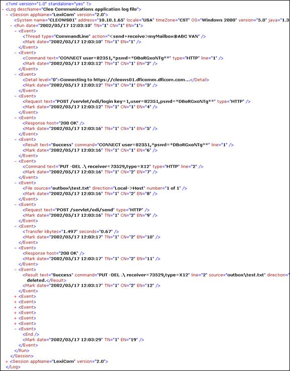

Located in
\logs\VersaLex.xml, the system log file is also an XML file. While
your VersaLex software is
running, the log is continually appended with any messages generated by running actions or
by the application shell. However, even though it is continuously updated, the log is
always a valid and well-formed XML file.
The log XML file is formatted as follows:

- One and only one <Log> exists in the file.
- <Log> may contain one or more
<Session>elements.
- <Session> has the product name and version.
- <Session> contains one <System>, one
<License>, and one <Run>.
- <System> has information about the computer.
- <License> has information about the installed license.
- <Run> has the <Session> starting date/time
stamp, <Thread> number, <Command> number, and
<Event> number.
- <Run> may contain one or more <Event>
elements.
- <Event> contains either <Thread>,
<Detail>, <Command>,
<File>, <Transfer>,
<Request>, <Response>,
<Result>, or <End> always followed by
<Mark>.
- <Thread> marks the start of an action run, has run type and action
path.
- <Detail> provides extra detailed information anywhere in the
flow.
- <Hint> provides insight into possible cause of error or
exception.
- <Command> marks the start of a command within an action, has
command text and line number.
- <File> marks the start of a file transfer within a command, has
file paths and counts. If the file being transferred is part of a zip archive, then the
entry name is included. Further, if the file being transferred is part of an unzip
operation, then the entry number is placed in brackets (e.g., number=1[5] of
3 indicates this file is the fifth entry of the first zip file a total of
three zip files that are being unzipped).
- <Transfer> marks the completion of a file transfer, has transfer
rate.
- <Request> contains the protocol-specific request made to the
host.
- <Response> contains the protocol-specific response from the
host.
- <Result> marks the end of a command or file transfer, has resultant
status. The <Result> element also repeats
<Command>, <File>, and
<Transfer> information so that this element alone can be used to
determine command and file transfer results. The CRC-32 value, if available, is also
included in the <Result> element.
- <End> marks the end of an action.
- <Mark> has the date/time stamp and corresponding
<Thread> number, <Command> number, and
<Event> number.
Because more than one action can be active at any given time, the
<Thread> number and <Command> number references
provide a means for grouping related <Event>s together.
The command line options allow an extra log file (same format) to be generated to a
user-specified path (see Execute from Command Line). This log file is in addition to
the overall system log file and contains only the messages generated by that session of the
Cleo HarmonyCleo VLTraderCleo LexiComserver.
The Cleo HarmonyCleo VLTraderCleo LexiCom software provides a
log file viewer for the active log file or any archived log file. Outside of Cleo HarmonyCleo VLTraderCleo LexiCom, a log file can be
viewed through any browser (like above) at any time, potentially with an XSL style sheet
applied.